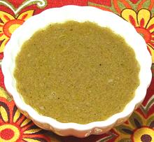

 |
Spanish Salad DressingSpain - Catalunya | ||||
| Makes: Effort: Sched: DoAhead: |
6 oz ** 10 min Best |
A salad dressing for greens with distinctive flavor and more body than most oil and vinegar dressings. It is excellent for buffet service because it won't separate. | |||
|
|
2 1 8 6 3 1 2/3 1/2 |
cl t T T t t t |
Garlic Salt Anchovy fillet (1) Olive Oil ExtV Wine Vinegar (2) Dijon Mustard Pepper Sugar (3) |
Don't worry about the amount of anchovies - a guest who's wife said he would not eat anchovies thought this dressing was wonderful - but see Note-1. Make - (10 min)
|